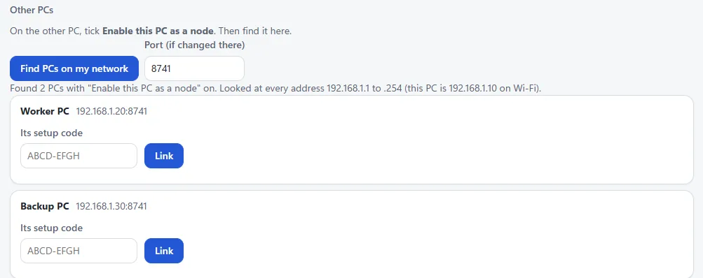

Find PCs, rescan Hugging Face, scan folders, the audit and Hosted live.
Find PCs on my network (Network) looks at every address on your home network for a PC with Use this PC as a node on, at the port beside it (8741 unless changed there), 64 at a time; a home network takes a few seconds. It lists what it found, each with a box for its setup code. Nothing is linked until you type the code.
Rescan Hugging Face (the Models page, beside "File list from …") reads Hugging Face's whole list of GGUF chat models again, most downloaded first, down to the models fewer than 10 people downloaded last month (about 200 pages and 70 MB on 5 Oct 2026). The list from before stays until the new one is whole. A copy ships with TOMLIN, so the first search on a new PC already has one.
Scan folders (the Bridge's Projects bar) finds the projects that are new or gone in your working folders since the last scan.
Scan app (audit) (a project's … menu in the Bridge) runs the built-in audit: about 140 rules for keys, injection, sign-in and payment gaps, uploads, accessibility and what publishing the project would give away about you. It catches common faults, not everything; Review with AI… builds a prompt for the ones no rule finds.
Hosted live (the same menu) takes the address a project is hosted at: a green, amber or red light shows whether it answers, checked every 5, 10 or 15 minutes.

Find PCs on my network: two PCs found, each waiting for its setup code.